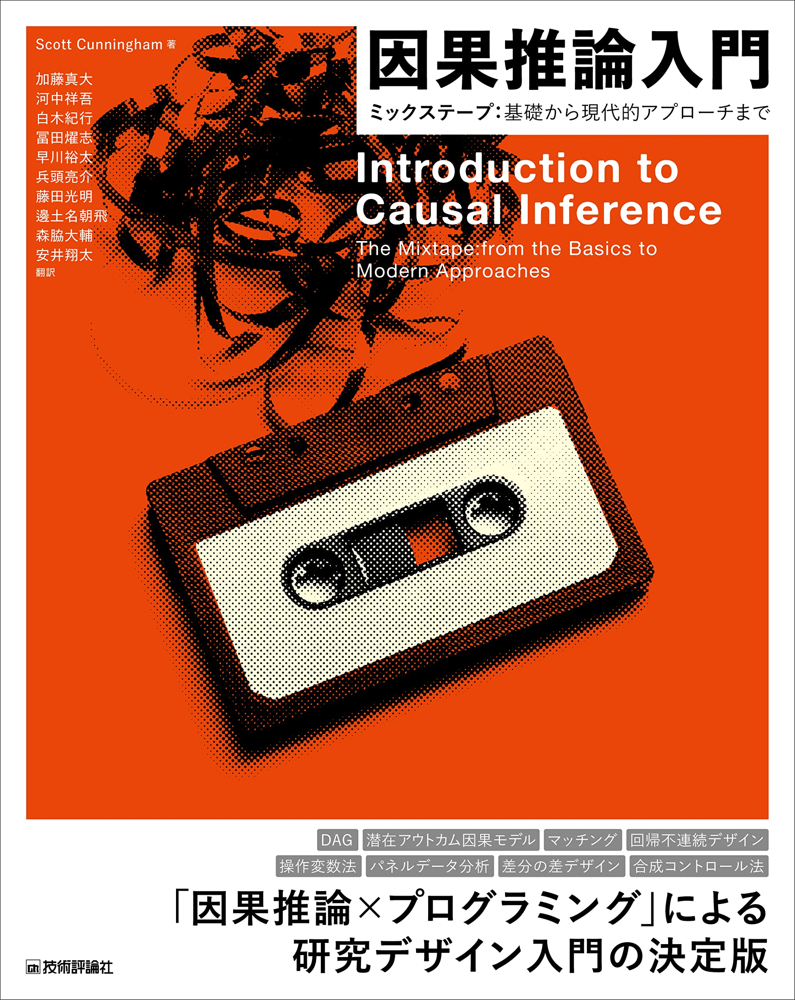

研究、仮説、実証会計
第2回講義の到達目標は、
- 実証研究とはどんなものかを理解し、他人に説明できる。
- 実証研究で扱える研究課題を理解し、研究課題を適切に設定できる。
- 良い研究課題が持つべき特性を理解し、その特徴を備えた研究課題を設定できる。
第1回講義の到達度検証のための課題は、以下の通りです。
- 定量データを用いて行う実証研究の利点と欠点を説明する。
- 自分が興味をもてそうな研究課題を設定する。
- 上で立てた研究課題がよい研究課題かどうかを5つの観点から検討し、評価する。
第2回講義の目次は、
- セクション 1.1 会計を計量する？
- セクション 1.1.1 実証会計学とは？
- セクション 1.1.2 他の経営学領域
- セクション 1.1.4 学術雑誌
- セクション 1.5 今回の課題
実証研究・実証会計
ここでは、教科書「Rによる計量政治学」の内容を「会計学」に置き換えて考えてみます。 「計量会計学」という言葉は一般的ではなく、会計学の世界では「実証的会計研究」とか「実証会計学」いう言葉が使われています。
社会科学において、社会で生じる様々な現象（たとえば、経営現象や会計実務）を、数値化して分析することを計量化(quantification)と呼びます。 計量化されたデータを用いて、社会現象を説明しようとするアプローチを計量分析(quantitative analysis)と呼びます。 計量分析の手法は、統計学や計量経済学などの数理的な手法を用いて、社会現象を説明しようとするものです。
会計とは経営活動から生み出される価値の変化を貨幣的に計測・記録し、その情報を整理し、集約することで、最終成果物として報告書(たとえば貸借対照表など)を作成し、それを利害関係者に報告することで、投資意思決定に役立つ情報を提供したり、利害関係者間の利害調整を行うことを目的とした一連のプロセスを意味します。 つまり会計そのものが、経営現象を計量化することを目的としているため、その最終成果物である財務諸表は、経営現象を計量化したデータの集合体と言えます。 この会計という経営実務を研究対象とした学問を会計学(accounting)といいます。
会計学の領域
会計学には様々な研究分野があります。 会計の歴史を研究対象とする会計史(accounting history)、会計の計算構造を研究対象とする計算構造研究(accounting structure)、簿記そのものを研究対象とする簿記論(bookkeeping)、そして、会計の実務を説明し予想するための理論の構築を目指す事実解明的な会計研究(positive accounting research)などがあります。
とりわけ事実解明的な会計研究のうち、公表された情報を計量分析の手法を用いて分析する会計研究を、実証会計学(archival based empirical accounting)とか、単に実証会計と呼びます。 実証会計以外の事実解明的な研究には、実験により生成されたデータを分析する実験会計研究(experimental accounting)、データを必要とせず、数理モデルを用いて行われる分析会計研究(analytical accounting)などがあります。
国際的に評価の高い会計学の学術誌である、The Accounting Review(TAR)、Journal of Accounting and Economics(JAE)、Journal of Accounting Research(JAR)、Review of Accounting Studies(RAST)、Contemporary Accounting Research(CAR)の五大誌に掲載されている論文の大部分が、会計情報を用いた計量分析となっています。 ただこの5誌はすべて北米の研究機関や大学が発行している雑誌ですので、実証、実験、分析的な会計研究がメインストリームの扱いとなりますが、ヨーロッパでは、 Accounting, Organisation snd Society(AOS)、European Accounting Research(EAR)、British Accounting Research(BAR)、Critical Accounting Research(CAR)といった、定性的研究も重要視し、経済学ではなく社会学をベースとした研究が主流？となっている雑誌もあります。しかし松浦は社会学について語れる知識がないので、やはり沈黙します。
会計研究の世界では、1960年頃までは規範的研究(normative research)という「〇〇するべき」という主張をする研究が主流でした。たとえば企業が保有する株式を時価評価すべきかとか、ある特徴をもつリース資産を購入したものとして扱うべきか、といったものです。 しかし、1968年にJournal of Accounting Researchに掲載されたBall and Brown (1968) An Empirical Evaluation of Accounting Income Numbersを皮切りに、実際に会計情報は投資家の役に立っているのかをデータを使って確かめる、という、いわゆる実証研究が行われるようになり、今日まで会計研究の主要分野となっています。
実証的会計研究を行うために必要な知識・技術として、
- 会計基準・会計理論
- ミクロ経済学（ゲーム理論、契約理論、情報の経済学）
- 計量経済学
- ファイナンス理論（コーポレート・ファイナンス）
- プログラミング
が挙げられます。
同じ事実解明型研究の中でも、証拠では無く論理による主張を目指す分析的会計研究で必要な知識・技術として、
- 会計基準・会計理論
- ミクロ経済学（ゲーム理論、契約理論、情報の経済学）
- 最適化理論
- 差分方程式
が挙げられます。 そもそも分析的会計研究は、会計現象を抽象化し、数学でその現象を表現するモデルを作り、そのモデルを解くことで得られる均衡解を比較静学することで様々なインプリケーションを得るため、実際に発生していない問題も研究することできる利点があります。 その反面、要求されるモデルを作るセンスや、解けるモデルを構築するための数学レベルも高く、また研究に要する時間も長いため、実証的会計研究に比べて論文が少ないです。 しかし、理論と実証は研究の両輪をなすものであり、どちらも重要であることに違いはないので、完全に理解することはできなくても、目を通す努力は必要でしょう。
ただやはり難しい数式が出てくる会計研究は松浦には完全に理解することはできないので、ここでは実証的会計研究について考えていきます。ヴィトゲンシュタインの言葉を借りれば、語り得ないものは語らないということで、分析的会計研究は沈黙するべきです。
他の経営学領域
誤解を恐れずに、会計学者の松浦が他の経営学領域について、ざっくりと説明してみます。 立命館大学経営学部経営学科には、
- 会計・ファイナンスコース
- 戦略コース
- 組織コース
- マーケティングコース
の4コースがあります。これをもとに、経営学領域をざっくりと分類してみます。
会計・ファイナンスコース
会計学を大きく2つに分類すると、
- 財務会計
- 管理会計
に分かれます。これは企業外への情報提供を目的しているのか、それとも会社内部の経営管理を目的としているのか、によって分類しています。 情報提供を主目的とする財務会計は、制度会計とも呼ばれ、会社が共通して利用する会計基準に従って情報生産をする会計システムを研究対象としています。 これに対し、経営管理を主目的とする管理会計は、会社ごとに独自の会計システムを構築し、会社の経営管理に役立てることを目的としています。 したがって、財務会計情報は公表されているものが多く、代表的な情報源として有価証券報告書がありますが、管理会計情報は非公開のものが多く、データが入手困難です。
ファイナンスを大きく2つに分類すると，
- コーポレート・ファイナンス
- 投資論
に分けられると思います(たぶん)。 コーポレート・ファイナンスは、企業が資金を調達する際の意思決定を研究対象とし，投資論は投資家が資産を選択する際の意思決定を研究対象とします。
戦略コース
戦略コースは、企業や経営者が選択できる行動のメニューについて考えることを目的としています。 ただ戦略論という研究領域はあるのでしょうが，その分野の先生が主戦場とする学会や学術雑誌が分からないので，うまく説明できません。
組織コース
組織コースは、組織を研究対象とするコースです。大きく
- マクロ組織論
- ミクロ組織論
に分けられます。 マクロ組織論では、組織の構造や組織の環境との関係を研究対象とする一方で、ミクロ組織論では、組織内の個人の行動や組織内の人間関係を研究対象とします。とりわけミクロ組織論では、組織内の人に焦点を当てた研究を行うため、アンケート調査や実験による検証が多く、心理学に基づく定量的な研究も多く行われています。
マーケティング・コース
マーケティングは，顧客目線か企業目線かで2つに分けられます。
- マーケティング
- 消費者行動論
前者が企業が顧客に提供する商品やサービスについて研究する一方で，後者はその商品やサービスを消費する顧客に焦点を当てた研究を行います。 とりわけ，「消費」という現象を研究対象にする学問は多く，マーケティング以外にも，心理学，経済学，統計学といった分野で消費行動を研究しています。 心理学における消費行動論とマーケティングにおける消費行動論は非常に近い関係にあります。 また経済学とりわけ実証産業組織論における消費行動論は，消費をモデル化し，データをシミュレーション等で解析することで，消費行動のメカニズムを解明しようとするものです。 統計学における消費行動研究は「マーケティング・サイエンス」とも呼ばれており，高度な統計学やシミュレーションを用いて消費行動を分析し，消費のパターンを解明しようとするものです。
学術雑誌
学術研究が掲載された研究雑誌(これをジャーナルといいます)は数多くありますが、そのうち査読(referree)制度を採用しているものを査読付き学術雑誌(referreed journal)といいます。査読者は匿名で論文の審査を行い，ジャーナルに掲載しても良い論文かどうかを判断し，その結果を査読レポートとして雑誌編集長に報告します。
この査読付き学術雑誌に論文を掲載させるには、雑誌編集長の審査を通過し，その後割り当てられた査読委員による査読を突破する必要があります。 投稿された論文のレベルが低い場合，編集長の判断で即リジェクトされます(これをデスク・リジェクトといいます。かなり辛い結果です)。 レベルが一定以上であると編集長が判断した論文だけが査読委員に割り当てられ，2名程度の査読委員が，「そのまま掲載可」，「少し修正すれば掲載可」，「かなり修正すれば掲載可」，「掲載不可」という判断をします。 この査読システムにより、研究者の研究成果の質を保証するとともに、研究者の研究成果を評価する指標としても機能しています。 しかし，この査読の時間が結構長く，投稿してから雑誌に掲載されるまで1年〜3年程度かかることもざらです。
国際的に評価の高い研究雑誌に掲載された論文は、掲載率数％という非常に厳しい査読を通過した高品質な経営学研究であり、最先端の社会科学の知識が詰まったものといえます。英語で書かれていますが、ChatGPTとかDeepLを駆使して、ぜひ読んでみてください。
会計研究だと、先ほど紹介した
- The Accounting Review (TAR)
- Journal of Accounting and Economics (JAE)
- Journal of Accounting Research (JAR)
- Review of Accounting Studies (RAST)
- Contemporary Accounting Research (CAR)
が五大誌ですが、それ以外にも読むべき雑誌として、
- European Accounting Review (EAR)
- Journal of Accounting and Public Policy (JAPP)
- Journal of Accounting, Auditing and Finance (JAAF)
- Accounting Horizons (AH)
- Journal of Business, Finance and Accounting (JBFA)
- Journal of American Taxation Association (JATA)
- Journal of Management Accounting Research (JMAR)
- Management Accounting Research (MAR)
などがあります。 ファイナンス研究だと、
- Journal of Finance (JF)
- Journal of Financial Economics (JFE)
- Review of Financial Studies (RFS)
- Journal of Corporate Finance (JCF)
- Journal of Banking and Finance (JBF)
あたりでしょうか。 マーケティング研究だと、
- Journal of Marketing (JM)
- Journal of Marketing Research (JMR)
- Journal of Consumer Research (JCR)
- Marketing Science (MS)
組織・戦略研究だと、
- Academy of Management Journal (AMJ)
- Academy of Management Review (AMR)
- Administrative Science Quarterly (ASQ)
- Organization Science (OS)
- Management Science (MS)
- Strategic Management Journal (SMJ)
があります。 これらの各領域におけるトップジャーナルを見てみると、多くの実証研究が行われていることが分かります。
日本の査読付き学術雑誌には、(松浦が知っている限りでは)、以下のようなものがあります。
会計学
ファイナンス
マーケティング
組織・戦略
研究テーマの選び方
プレゼミの達成目標は、経営事象に関する問題を発見し、その問題がなぜ生じているのか、どうすれば解決できるのかを考えることができるようになることです。 そこで、まずは研究課題の種類について学びます。 問いの立て方には大きく分けて3つのタイプがあります。
- 実証的問題
- 規範的問題
- 分析的問題
この3種類の問題について説明します。 「よい研究テーマ」の探し方を理解したらよい研究テーマが見付かるわけではないで、自分が面白い！と思えるような、興味引かれるテーマを見つけることが重要です。
リサーチ・クエスチョンの種類
リサーチ・クエスチョン(research question)とは、研究対象となる会計に関する、抽象度の高い問いのことです。 リサーチ・クエスチョンが決まれば、その問いに答えるために、何をするべきなのかが決まるため、非常に重要な要素となります。 たとえば、
- 会計情報の質が高いと、投資家の意思決定がよりよいものになるのか？
- 大きな監査法人は、財務報告の質を高めているのか？
- CSR活動に積極的な会社は、納税も積極的か？
- ステルス値上げと値上げに購買意欲に与える影響は同じか？
- 女性管理職を増加させることは，企業業績に良い影響を与えるのか？
これらのリサーチ・クエスチョンを3つに分類してみましょう。
実証的問題
実証的問題では、事実を調べることが目的となります。 たとえば、「のれんの非償却はM&Aを促進させるのか」という問いに対しては、のれんの非償却を行っている企業と、行っていない企業のM&Aの実施率を比較することで、その問いに答えることができます。
実証的問題を扱う会計研究でも、定量的な研究だけでなく、インタビューによる定性的な研究もあります。参与観察研究はあまり見ません。 事実に注目する研究となるため、主観的な要素はできるだけ排して、観察されたデータや発言といった客観的なデータを用いることが多いです。 このプレゼミでは、主として経営学分野における実証的問題を扱います。
規範的問題
いわゆる「べき論」を扱う問題で、日本の会計研究では今でも盛んに行われている研究です。 たとえば、「のれんは償却すべきか」という問いに対しては、のれんの償却を行うことで、どのようなメリットがあるのか、どのようなデメリットがあるのかを考え、そのメリットとデメリットを比較することで、その問いに答えることができます。 ただ、この場合でも、「誰にとっての」メリットを重視するべきなのか、という問題がでますが、そこは研究者の価値判断によって決まることになり、研究者の主観が大きく反映されることになります。
したがって教科書でも、規範的問題を実証的問題に変換する方法を考え、規範的問題を直接あつかう研究課題は取りあげません。
分析的問題
分析的問題は、まだ起こっていない、観察されていない現象を扱います。 そもそも起こっていない現象なのでデータも取りようがありません。 そこで、分析的問題では、モデル(model)を用いて、現象の起こりうるメカニズムを考えます。
基本的には、関心のある問題を抽象化して数式で表現し、前提条件と仮定を設定し、その問題を解くことで得られた結果を解釈することで、その問いに答えることができます。 たとえば、税務会計や監査といった情報が入手困難な領域において、ゲーム理論や契約理論、最適化理論を用いた分析が行われることが多いような気がしますが、そこまで詳しくないでし、難しいので、ここでは扱いません。
したがって、このプレゼミでは、各自がたてた実証的問題について考えていきます。
「よい研究テーマ」の見つけ方
政治学のMonroe (2000, pp.8–10)によると、
- 明快さ
- 検証可能性
- 理論的重要性
- 実用性
- 独創性
がよい研究テーマに必要な要素らしいです。
詳しくは教科書を読むとして、会計学や経営学でもほぼ同じですが、卒業論文においては、理論的重要性と独創性はあればよいですが、必ずしも必要ではありません。 なぜなら、理論的重要性を理解し、論文で示すことは、研究で用いる推論の背後にある理論や仕組みを完全に理解する必要がありますし、独創性を主張するためには、膨大な先行研究を読み、自分の主張が他の人とどう違うのか、どの点が新しいのかを明らかにする必要があり、とても時間がかかるからです。
したがって、明快な推論で導き出された仮説を、客観的なデータを用いて、適切な手法で分析し、その結果を解釈し、経営実務にどういう影響があるのか、を主張できれば、卒業論文としては申し分ないレベルです。
とりわけ、このプレゼミでは、検証可能性を重視します。 そのレポート・論文を読めば、他の人でも同じ分析を行うことが可能であり、誰でも追試が行えることが重要です。 データの集め方や変数の作り方、データ分析のプロセスが明確にしめされており、それを自分でもすぐに再現することが重要です。そのためにRは非常に有効なツールとなります。
規範的問題から実証的問題への変換
「べき論」は研究者の価値判断が大きく反映され、その研究者が主張する価値は主観的なものになるため検証ができません。 そこで規範的問題を実証的問題になるように問い方を変える方法を考えます。
1つめの方法は、参照枠組みを変える方法です。 「会計は投資意思決定に役立つべきである」という問いは規範的問題で、それは「会計は株主のためのものである」という価値判断が含まれています。このままでは検証できないので、「会計は投資意思決定に役に立っているのか？」に変えることで、検証可能な問いになります。
2つめの方法は、規範的問題の前提条件に注目する方法です。 「会計は投資意思決定の役立つべきである」という規範的記述の背後には、
- 会計は投資家のためのものである
- 投資家が会計(情報)を使えば儲かる。
- 投資家の投資が活発になれば、経済は活性化する。
という前提条件があると考えられます。 これを実証的な問題にするには、
- 会計(情報)の主な利用者は投資家なのか？
- 会計情報を使えば儲かるのか？
- 投資の役に立つ会計情報を提供することで、経済は活性化するのか？
のように、規範的問題の背後にある前提条件を検証可能な問いに変えることで、実証的な問題になります。
パズルを探す
パズル(puzzle)とは、ある現象を説明するために、既存の理論では説明できない現象のことです。 たとえば、配当パズル(dividend puzzle)とは、配当がなぜ存在するのか、という問題です。 配当は、株主に対する利益配分の一つであり、株主にとっては配当が高いほうがよいはずです。しかし、実際には、配当が高いほど株価が低くなるという現象が観察されます。 このような現象を説明するために、既存の理論では説明できないので、パズルと呼ばれ、研究題材としては非常に魅力的です。
研究論文の構成
実証研究の論文構成は、ほぼ以下のような構成となっています。
- イントロダクション
- 先行研究
- 理論
- 仮説
- 対抗仮説
- 作業化
- 証拠
- 結論
このうち、1-4は、研究の背景を説明する部分であり、5-7は、研究の主要な部分であり、8は、研究のまとめです。
理論と仮説
第2回講義の到達目標は、
- リサーチ・クエスチョンを設定することができる。
- 作業仮説を作る。
- 作業仮説を検証するためのデータを集めることができる。
- 代理変数の妥当性を検討することができる。
です。 第1回講義の到達度検証のための課題は、以下の通りです。
- 構成概念を定義し、因果関係を示す理論を説明できる。
- 作業仮説を作り、構成概念を検証するための代理変数を構築する。
- 構成概念の代理変数として複数の候補を挙げる。
- Kinny’s Bosを作成する。

たとえば、監査研究の一例を挙げてみると、次のような図になります。

「よい理論」とは？
実証研究のリサーチ・デザイン(research design)のプロセスは次のような手順になります。
- パズルを見つける（簡単には見付からないです）
- パズルを説明するための複数の前提条件を使って理論を作る。（前提条件を自分で考えるのは難しすぎるので、先行研究を参考にすることが多いです。理論はパズルを説明するための仮説の集合体です。）
- 理論から作業仮説(working hypothesis, hypothesis)を引き出す。
- 作業仮説を検証するためのデータを集める。
- データを使って作業仮説を検証し、理論の妥当性を確かめる。
理想的にはこうなるでしょうが、現実にはこんなにうまくいきませんが、この講義では3〜5のプロセスを重視します。というのも、1と2のステップはかなり難しいので、現実には、
- 興味のある経営現象を見つけて調べる。
- 経営現象の発生を説明するための理論を見つけるために、先行研究を漁る。
- 先行研究を参考にして作業仮説を作る。
という風に行われることが多い（と思います。たぶん）
因果法則の3つの条件
因果関係(causality)と相関関係(correlation)の違いを理解しておきましょう。
因果関係は、近年の社会科学領域の研究で最も注目されているキーワードでしょう。 もともと因果関係を特定し、推定する研究は数多く行われてきましたが、近年になって発達した計量経済学や実験経済学の手法を使って、より厳密に因果関係を特定しようとする研究が増え、因果関係を適切に特定することの重要性が認識されるようになりました。
例えば、こんな本が近年出版されています。



因果関係とは、原因(causal)と結果(outcome)の関係のことです。正確に言うと、ある要因\(X\)を操作するとき、別の要因\(Y\)が変化することです(Imbens and Rubin, 2015, p.4)。
因果関係を考える際には、「効果をもたらした原因」(causal of effect)と「原因のもたらす効果」(effect of cause)の両方を考える必要があります。 例えば、ある企業が従業員の給料を上げたとします。 このとき、従業員の給料が上がったことが「効果をもたらした原因」であり、従業員の給料が上がったことによって、従業員のモチベーションが上がったことが「原因のもたらす効果」です。 定量的な研究では、「原因のもたらす効果」を分析することが多いです。
因果関係があると考えるためには、3つの条件を確かめる必要があります。
- 原因が結果より先に起こる。
- 原因と結果が共変する。
- 原因以外の重要な要因が変化しない。
この因果関係を記述するものを理論といいます。
理論とは
理論とは「原因と結果について一般的な論述」で、「〇〇であるとき、△△が起こる」というようなものです。推論といってもよいです。 原因と結果の関係を「説明変数\(X\)」(explanatory variable)と「応答変数\(Y\)」(response variable)の関係として表現します。
\[ X \Longrightarrow Y \]
推論を作る際には，どれだけ説得力があり納得できる仮定を設定するかが重要となります。仮定のない推論など役に立たないからです。 経営学は独自の理論をもたない学問とも言われ，とりわけ会計学における事実解明的研究(positive research)では，心理学や経済学で蓄積された理論を借用することが多いです（松浦は経済学に基づく推論を行っています）。
良い理論とは？
良い理論・推論が持つべき性質は次のようなものです。
- 反証可能であること
- 観察可能な予測が多いこと
- 具体的であること
- シンプルであること
以下ではそれぞれについて簡単に説明します。
反証可能であること
「反証可能性」(falsifiability)という科学で最も重要な特性の1つを確保する必要があります 1 。
つまり，論文を読んだ人ならだれでも，「この理論は間違っている」ということを示すことができるようにする必要があります。 反証可能性がない主張は占いと変わりません。
観察可能な予測が多いこと
結果として発生する現象が観察可能である予測を行う必要があることを示しています。 当然ですが，自分の主張を証拠を用いて説得力を高めようとしているのですから，その予測が当たっているのかどうかを確認できる必要があります。
具体的であること
「業績が悪くなる」のようにあいまいな表現ではなく，「昨年度と比べて利益が減少する」とか「累積リターンがマイナスになる」といったように，具体的な予測を行う必要があります。「リスク」とか「パフォーマンス」とか「悪くなる」とか「加速する」といったあいまいな言葉は常に定義してから使うようにしましょう。
シンプルであること
理論はシンプルでなければなりません。 理解しやすく，使える範囲が広く，反証可能性が高い理論は，シンプルになっていきます。
基本的には，先行研究で使われている理論を援用することが多い経営学・会計学では，先行研究で用いられた理論や推論に無駄がないかどうか，よりシンプルにいえないかどうか，を考えることが多いです。
理論をシンプルにするには，前提となる条件を少なくする必要があります。 観察された経営現象をそのまま記述しようとすると非常に長く，複雑な文章になるでしょう。 それでは何が本質的に重要か分からないので，経営現象を抽象化・単純化することで，本質以外のものをそぎ落とし，理論をシンプルにすることがで，経営現象への理解がより深まります(オッカムの剃刀)。
仮説と仮説検証
仮説とは
科学的には，「理論」と「仮説」とは同じものです。 反証されずに生き残った理論を仮説(hypothesis)と呼びます。 たとえば、ニュートンの万有引力の法則は，現在でも仮説として使われています。
この「仮説」をより具体的にしたものを「作業仮説」(working hypothesis)と呼びます。
- 作業仮説とは，自分が使える特定の変数についての記述
- 「もしこの仮説が正しければ・・・のはず」
- 理論より作業仮説の方が具体的である
- 仮説から引き出される観察可能な予測について述べる
作業仮説
たとえば「監査の質が高いほど，財務報告の質が高くなる」という理論から，作業仮説を引き出してみましょう。 この文章の中で，
- 監査の質
- 高い
- 財務報告の質
- 高い
という4つの用語を，測定可能な尺度にして，その高低を定義する必要があります。
たとえば，監査の質を「監査報酬額」で測定して，財務報告の質を利益操作の程度で測定するとします。利益操作の程度を異常アクルーアルで代理すると
- 監査報酬が、同業他社平均より高い企業ほど，異常アクルーアルの絶対値が小さい
という作業仮説を立てることができます。
理論から作業仮説を導出することは、構成概念から代理変数を導出すること深く関連しています。 この作業のコツをつかむには、良質な論文を読んで、自分でまとめてみて、他人に聞いてもらい、議論することが重要です。 そうして、自分の理論を作り上げていくのです。
本日の課題
脚注
「反証不可能な理論は科学ではない」といったのは，科学哲学者カール・ポパー(Karl Popper)です。 Popper (1959) The Logic of Scientific Discovery, London: Hutchinson.（邦訳：ポパー（1971）『科学的発見の論理 上下巻』，恒星社厚生閣）↩︎